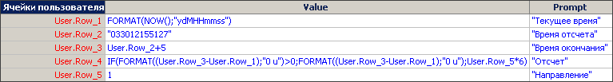
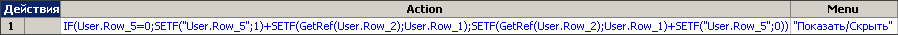
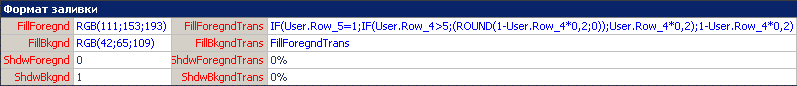
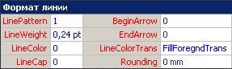
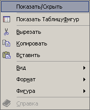
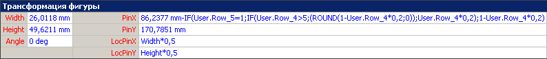

Метод создания интерактивной прозрачности.
 Действия будут приводиться в сжатом виде. Для более полного объяснения всех выполняемых действий, рекомендуется ознакомиться с предыдущими статьями.
Действия будут приводиться в сжатом виде. Для более полного объяснения всех выполняемых действий, рекомендуется ознакомиться с предыдущими статьями.
В Visio объекты не имеют возможности изменения во времени, как например, во Flash. Это связанно в первую очередь с настройками течения времени в самой программе, и отсутствием инструментов по работе с ними. В течении времени объекты должны изменяться по какому-либо условию (2-м нажатие мышкой, например).
Для корректного течения времени необходимо добавить в реестр этот reg-файл, либо внести изменения вручную, как это было описано в этой статье.
Как вариант, создадим объект, который будет исчезать при нажатии на него правой кнопкой мышью и выбора действия. Для этого создадим простую фигуру (прямоугольник, например) и создадим в ТаблицеФигур (ShapeSheet), этого прямоугольника, раздел Ячейки пользователя(User-defined Cells). И внести следующие изменения:
Для Visio 2002
В ячейку User.Row_1:
=FORMAT(NOW();"ydMHHmmss")
В ячейку User.Row_3:
=User.Row_2+5
В ячейку User.Row_4:
=IF(FORMAT((User.Row_3-User.Row_1);"0 u")>0;FORMAT((User.Row_3-User.Row_1);"0 u");User.Row_5*6)
В ячейку User.Row_5:
=1
Для Visio 2003
В ячейку User.Row_1:
=FORMAT(NOW(),"ydMHHmmss")
В ячейку User.Row_3:
=User.Row_2+5
В ячейку User.Row_4:
=IF(FORMAT((User.Row_3-User.Row_1),"0 u")>0,FORMAT((User.Row_3-User.Row_1),"0 u"),User.Row_5*6)
В ячейку User.Row_5:
=1

Далее создается раздел Действия (Actions) и в этот раздел вносятся изменения:
Для Visio 2002
В ячейку Action:
=IF(User.Row_5=0;SETF("User.Row_5";1)+SETF(GetRef(User.Row_2);User.Row_1);SETF(GetRef(User.Row_2);User.Row_1)+SETF("User.Row_5";0))
В ячейку Menu:
="Показать/Скрыть"
Для Visio 2003
В ячейку Action:
=IF(User.Row_5=0,SETF("User.Row_5",1)+SETF(GetRef(User.Row_2),User.Row_1),SETF(GetRef(User.Row_2),User.Row_1)+SETF("User.Row_5",0))
В ячейку Menu:
="Показать/Скрыть"

Затем вносятся изменения в раздел Формат заливки(Fill Format):
Для Visio 2002
В ячейку FillForegndTrans:
=IF(User.Row_5=1;IF(User.Row_4>5;(ROUND(1-User.Row_4*0,2;0));User.Row_4*0,2);1-User.Row_4*0,2)
В ячейку FillBkgndTrans:
=FillForegndTrans
Для Visio 2003
В ячейку FillForegndTrans:
=IF(User.Row_5=1,IF(User.Row_4>5,(ROUND(1-User.Row_4*0.2,0)),User.Row_4*0.2),1-User.Row_4*0.2)
В ячейку FillBkgndTrans:
=FillForegndTrans

Затем вносятся изменения в раздел Формат линии(Line Format):
В ячейку LineColorTrans:
=FillForegndTrans

Теперь закрыв ТаблицуФигур и нажав правой кнопкой мыши на прямоугольнике, в контекстном меню выбираем “ Показать/Скрыть ”. И если все было сделано правильно, то прямоугольник начнет исчезать.

Также добавив формулу из ячейки FillForegndTrans в ячейку PinX, раздела Трансформация фигуры, получится “уезжающая” исчезающая часть.

Данный способ не является самым оптимальным. Он лишь показывает, что это можно сделать.
Примеры из статьи.
В начало раздела
Предыдущая статья
Следующая статья
Автор: Ничков Алексей (Digitall)